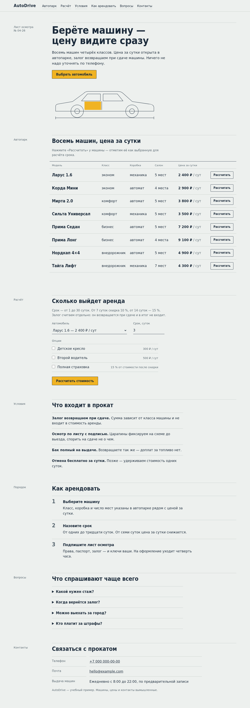
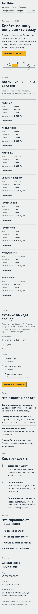
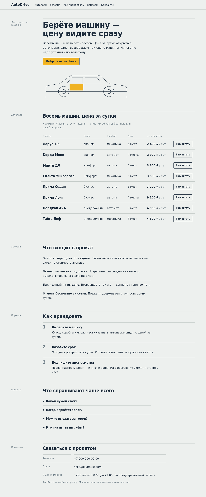

Практика 4: AutoDrive — две фичи с агентом
Лендинг проката автомобилей (вымышленный) повторяет демо с занятия: A — лендинг, B — калькулятор. Агент — Claude Code (claude -p, по сессии на шаг); я ставил задачи, принимал результат и делал commit.
А. Настроенная среда и зачем она
| Подключение | Файлы | Какой шаг улучшает | Подтверждение применения |
|---|---|---|---|
| Правила | AGENTS.md, CLAUDE.md (@AGENTS.md), requirements.md, style-guide.md | Постановка задачи: стек, команда проверки, запреты и контракт A/B. Claude Code читает CLAUDE.md, поэтому правила подключены через импорт, а источник один — AGENTS.md. | 01: без подсказок назвал команду проверки, границы A и B (логика «Рассчитать» — это B), ограничения |
| Skill (готовый) | frontend-design — Anthropic | Дизайн с нуля без дизайнера: токены, типографика, отказ от шаблонных решений. | 02: вызов Skill frontend-design, план «лист осмотра»; 04: реализация по плану |
| Skill (свой) | landing-check + audit.mjs | Приёмка: одна команда вместо ручного обхода критериев. | 09, отчёт landing-check-report.md |
| MCP playwright | .mcp.json (системный Chromium — NixOS) | Агент видит отрисованную страницу: горизонтальный скролл, консоль, клики. Тесты по HTML этого не ловят. | 03: листинг каталога и 404 на пустом проекте; в A агент нашёл по скриншоту рассинхрон колонок на 1280 px |
| MCP contrast (свой) | contrast_server.py | Доступность палитры: контраст токенов из styles.css. | 08 |
| Hook | settings.json → check-after-edit.sh → runner check.sh | Проверка после каждой правки кода без просьбы; результат возвращается агенту (PASS — additionalContext, FAIL — exit 2 + stderr). | 05: FAIL → PASS; 06: 24 запуска в работе над B, поймал поломку теста правкой index.html |
| Субагент (бонус) | tester.md | Независимое ревью без права менять код. | 06: нашёл контраст 3.70:1 у --ink-2 при требовании 4.5:1 |
Hook в действии
check-after-edit: FAIL после правки tests/tmp-hook.test.js — ℹ tests 25 ℹ pass 24 ℹ fail 1 AssertionError [ERR_ASSERTION]: Expected values to be strictly equal: actual: 1, expected: 2 check-after-edit: PASS — ℹ tests 25 ℹ pass 25 ℹ fail 0
Б. Skill
Свой: landing-check — автоматизация приёмки
Пять шагов: прочитать критерии → audit.mjs (10 статических правил: один h1, якоря, внешние ресурсы, заглушки контактов, подписи svg, FAQ…) → check.sh → браузер через playwright (скролл на 360/1280, консоль, скриншоты против style guide) → контраст токенов через свой MCP → отчёт с итогом PASS/FAIL. Skill только проверяет и обязан писать FAIL, если шаг не выполнился.
Запуск: первый прогон честно дал ИТОГ: FAIL — скрипт аудита не был разрешён в неинтерактивной сессии. Я добавил разрешение в проектный settings.json, продолжил сессию — ИТОГ: PASS: аудит 10/10, тесты 66/66, скролла нет на 360 и 1280, консоль чистая, контраст 12.72 / 5.01 / 5.28 / 7.77.
Проверка результата: аудит и все четыре пары контраста я перезапустил сам — цифры совпали; скриншоты ниже смотрел глазами.
Готовый: frontend-design — мой разбор
Это не код, а один SKILL.md — инструкция «дизайнеру студии»: сначала назвать предмет и аудиторию, затем собрать компактную систему токенов (4–6 цветов, шрифты, раскладка ASCII-схемой) и сверить её со списком признаков сгенерированного дизайна, и только потом верстать. Самое ценное — этот список антипаттернов (кремовый фон с терракотой, одинаковые карточки с тенью, капслок-надзаголовки, стрелки в кнопках): он заставляет агента выбирать, а не брать дефолт. В нашем запуске это видно: агент вызвал skill, придумал метафору «приёмо-сдаточный лист осмотра», заменил карточки автопарка реестром и сам проверял себя скриншотами. Слабое место — skill не знает ограничений проекта и не проверяет доступность: запрет внешних шрифтов держит AGENTS.md, а недостаточный контраст выбранного им серого поймал только tester.
В. Собственный MCP: contrast / check_contrast
contrast_server.py — stdio-сервер без зависимостей (JSON-RPC: initialize, tools/list, tools/call). Tool check_contrast(foreground, background, text_size) считает контраст WCAG 2.1; цвет — hex или токен --name, который сервер читает из :root в styles.css. Польза: после ревью tester проверка палитры стала одним вызовом по реальному коду; протокол и ответы закреплены тестом contrast-mcp.test.js в общем runner.
Реальные вызовы агентом (08):
check_contrast(--ink-2, --paper) → ratio 5.01, AA pass: true (после ревью) check_contrast(#6E7D86, --paper) → ratio 3.7, AA pass: false (до ревью) check_contrast(#12345, --no-such-token) → isError: Ошибка входа: '#12345' → '#12345' не hex-цвет; ожидается #RGB или #RRGGBB check_contrast(--ink, --no-such-token) → isError: Ошибка входа: токен --no-such-token не найден в :root файла styles.css; доступны: --display, --gap, --ink, --ink-2, …
Г. Рефлексия
reflection.md — что помогло, что мешало, где пришлось вмешаться и выводы.
Ход работы (как на занятии)
| Этап | Что произошло | Commit |
|---|---|---|
| 1–2. Фичи и среда | Требования A/B, AGENTS.md, frontend-design скопирован из anthropics/skills (прочитан до подключения), playwright MCP, свой skill. | 6706e48 |
| 3. Фича A | Тесты красные (5 pass / 3 fail) → реализация → 24/24; браузер на 360/1280. Сессия оборвалась на лимите — продолжена через --resume. | |
| 4. Style guide и hook | Агент назвал правила и места в коде; hook FAIL → PASS. Профиль tester. | fe9cdec |
| 5. Фича B | Git worktree practice-04-b, отдельный сервер на :8001 (порты worktree не изолирует). Новый чат → B (60/60) → ревью tester → два исправления (62/62). | 669b085 |
| 6. Объединение и handoff | git merge --ff-only, проверка объединённого состояния 62/62. HANDOFF.md — новая сессия верно пересказала состояние и прогнала проверку (07). | — |
Все подтверждения: evidence/ — для каждой сессии вызовы инструментов, ответы hook из --debug-file и итог агента. Запуск: python3 -m http.server 8000 в project/; проверка: make -C practices/practice_04 test.


